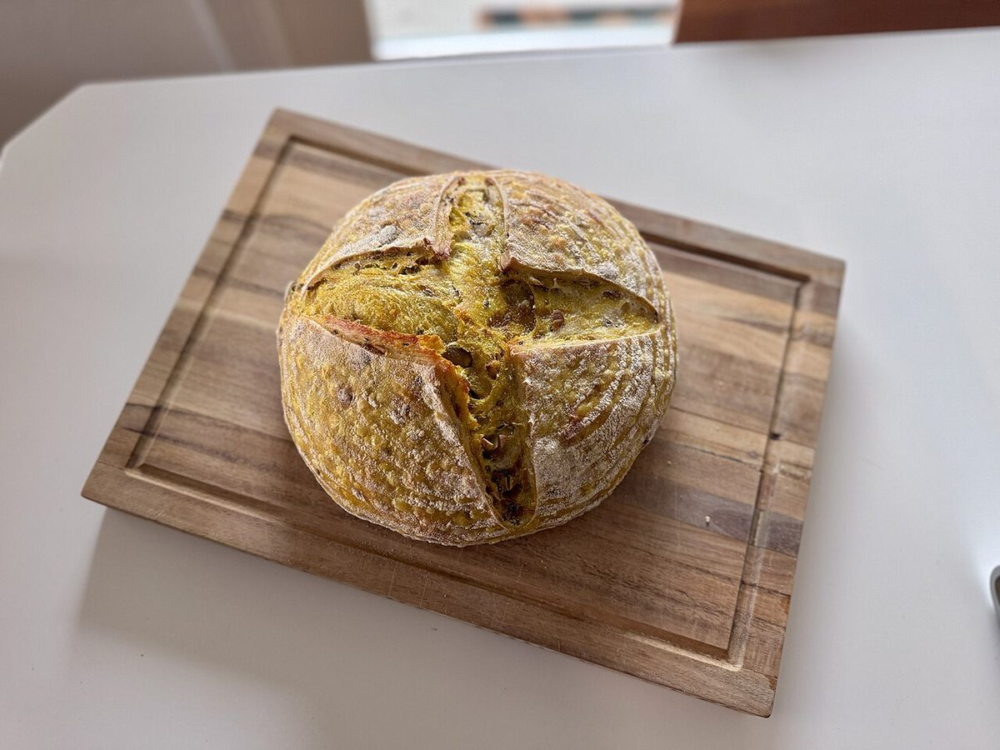
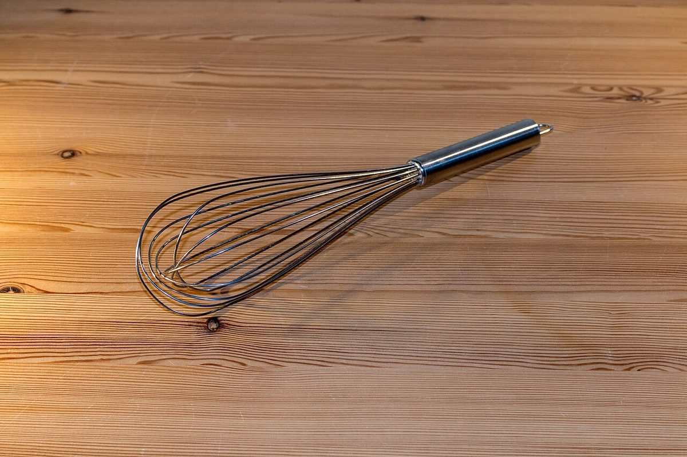
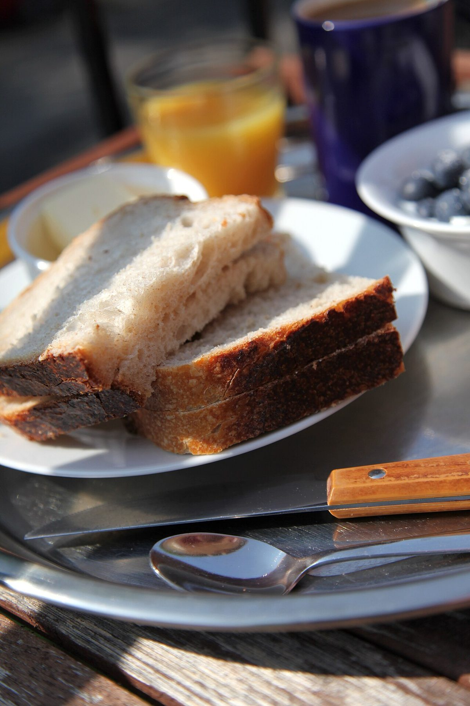
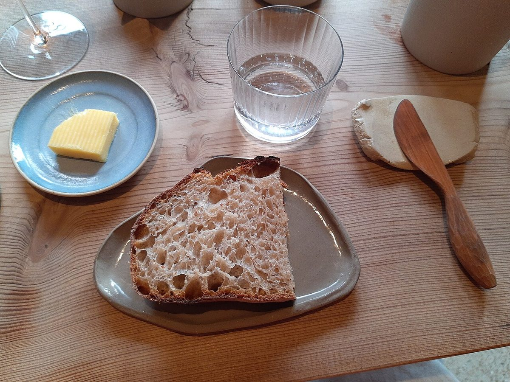
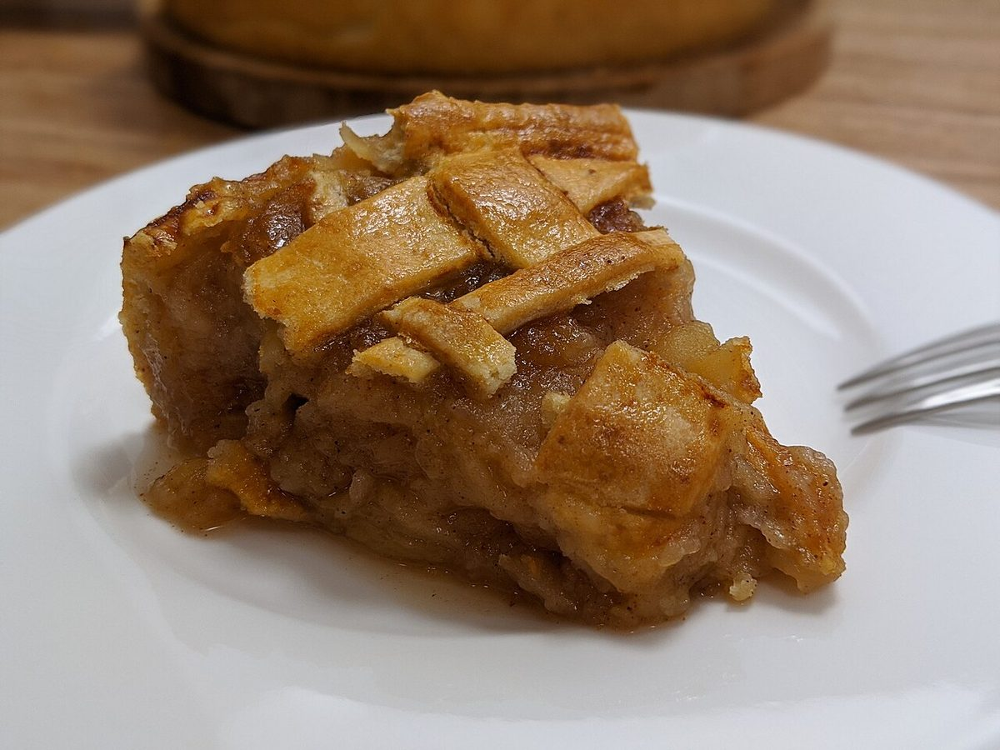
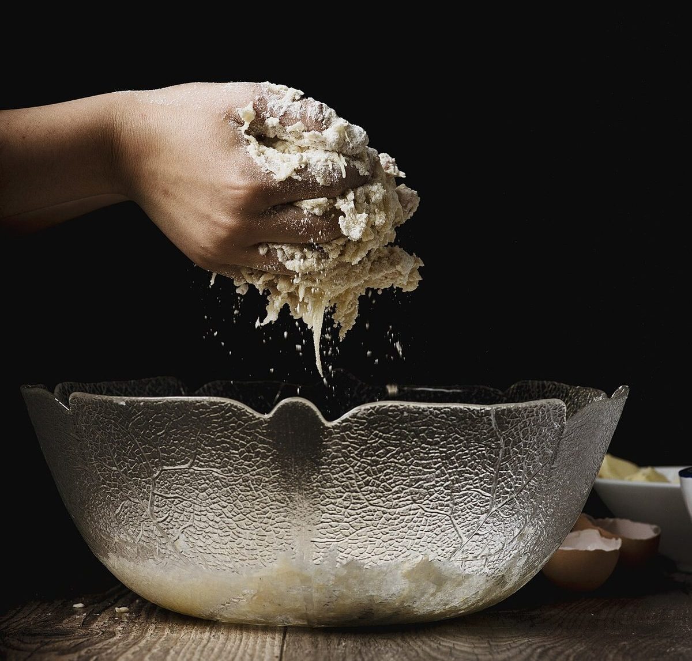
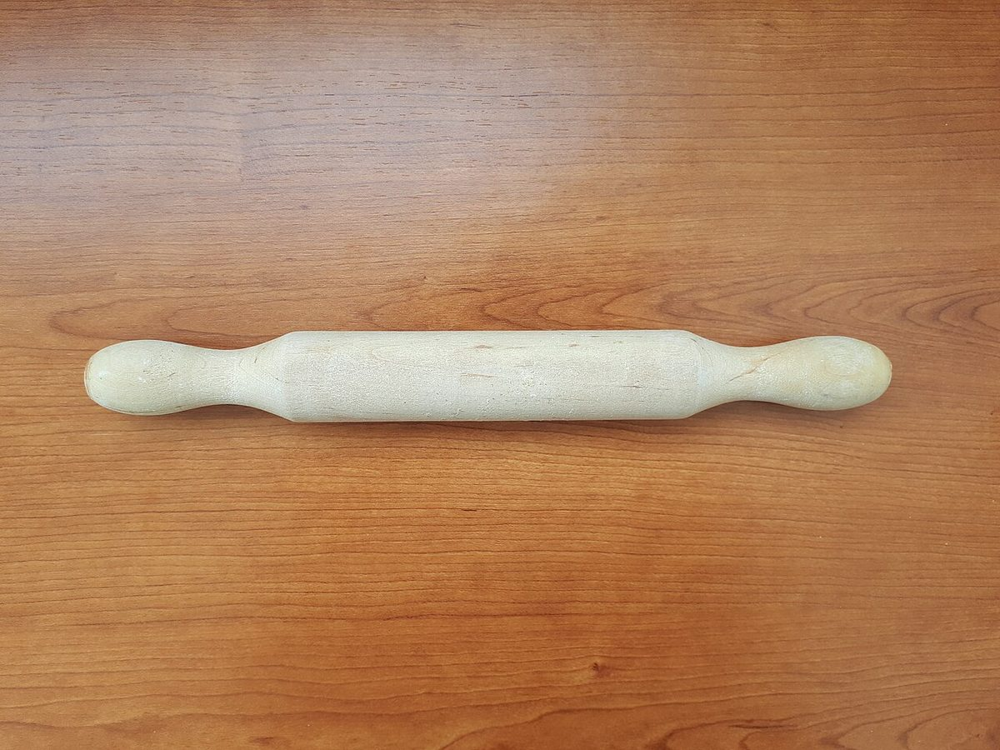
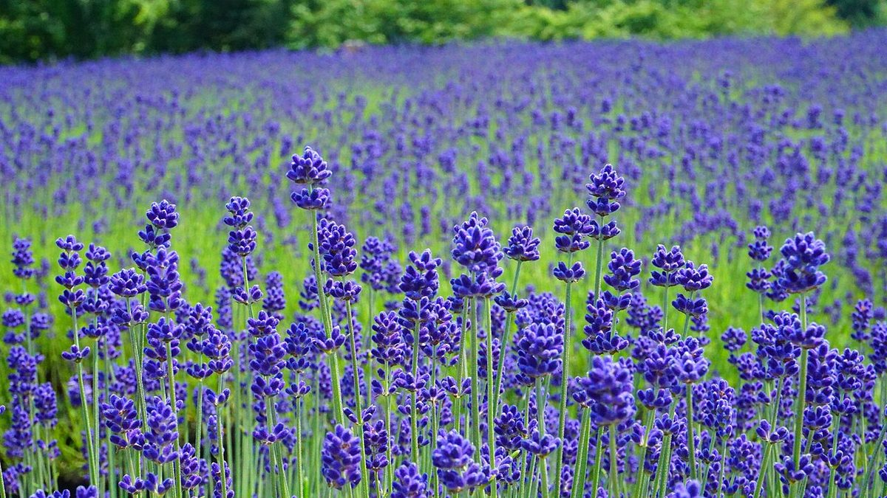

ゆっくり、パンのある日。
イメージです
明智町のパン屋「グラン・メール」

店名のこと
「グラン・メール」は、フランス語で「祖母」を意味する言葉です。
このサイトでは、そこから連想して、古いレシピ帳や台所に置かれた手紙のようなやさしい雰囲気で、お店を紹介しています。
お店の名前の由来や込められた想いは、現在準備中です。(お問い合わせください)
※「祖母のレシピ帳」というテーマは、制作側の案です。お店の理念ではありません。

パンのある一日
こんな時間が似合うお店になりますように。以下は制作側が思い描いたイメージで、お店の提供内容を示すものではありません。
朝
イメージ写真

カーテン越しの光の中で、ゆっくり始める朝。食卓にパンがあるだけで、一日が少しやわらかく始まります。
昼
イメージ写真

いつもの昼ごはんを、ちょっと特別に。窓辺の席や、公園のベンチで味わう時間を思い浮かべて。
おやつ
イメージ写真

午後のひと息に。お茶を淹れて、ほっとする時間をゆっくりと。
台所のすみっこから
小麦、粉、道具、季節の花。パンの周りにある小さなものたちのイメージです。




掲載写真はフリー素材のイメージで、店舗の実際の様子・商品ではありません。他の地域で撮影されたもの、撮影地が不明なものを含みます。
お店からのお知らせ
- 営業時間
- 準備中(お問い合わせください)
- 定休日
- 準備中(お問い合わせください)
- 商品の最新情報
- 準備中(お問い合わせください)
最新の情報はお電話、またはInstagramでご確認ください。